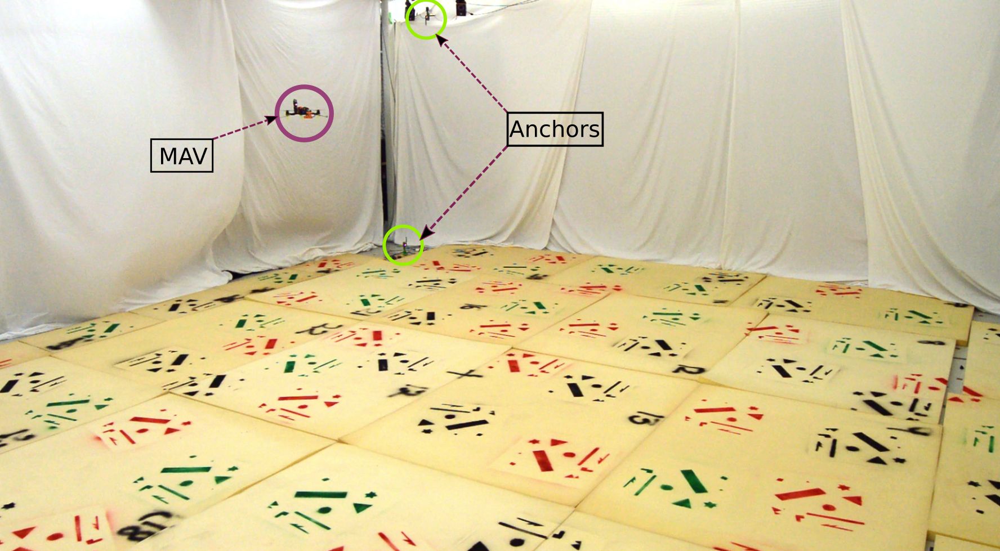
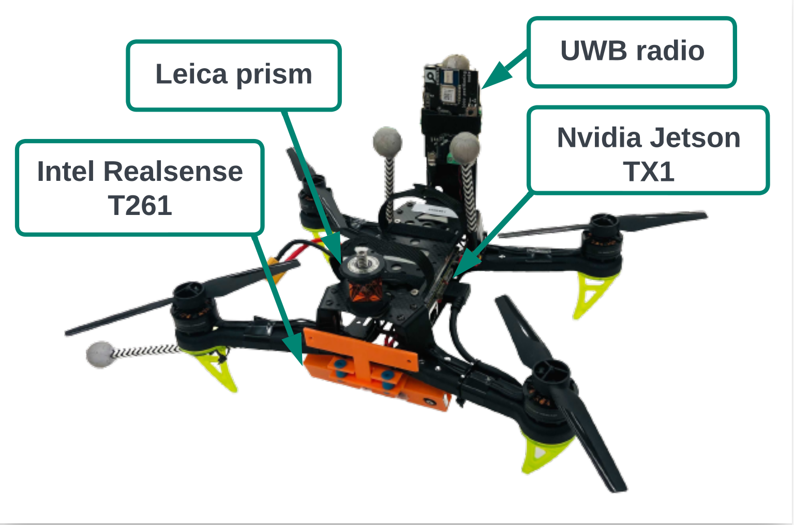

UTIAS_vicon_12122022
This dataset was collected at the UTIAS vicon testbed which is flight arena of dimensions 7m × 8m × 3.5m. The arena is equipped with 8 UWB anchors installed at the corners of the room and a Vicon motion capture system for ground truth. A picture of the tested with the anchors and the MAV is shown below.

The test platform is a custom-built 220mm size quadrotor with a single UWB tag, an Intel Realsense T261 tracking camera, and a Jetson TX1 computer. In each experiments, the MAV is commanded along minimum-jerk trajectories and the sensor data is recorded on the onboard computer.

Experiments
Videos of experiments involving four different paths are shown in the collage below.

Comments
- The T261 tracking camera has a 20 degree pitch angle with respect to the body-frame. However, the VIO data has been modified to be gravity aligned. In other words, the VIO data has been rotated to align with the body frame.
- Range measurements from UWB radios are susceptible to systematic and spatial-varying biases (Zhao et al., 2021). It is recommended to either compensate for the systematic biases using a calibration procedure or estimate the spatial biases online to achieve good positioning accuracy.
- Spatial offsets of the UWB radio and the T261 camera with respect body frame can be found in the config file.
Data files
The dataset can be downloaded from here: UTIAS_vicon_12122022